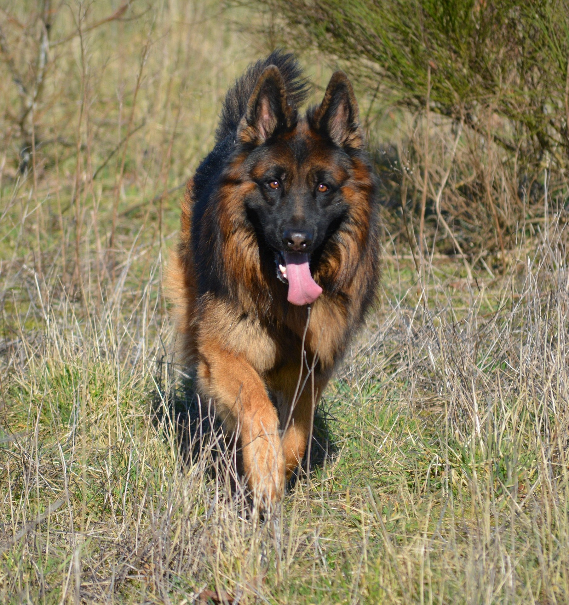
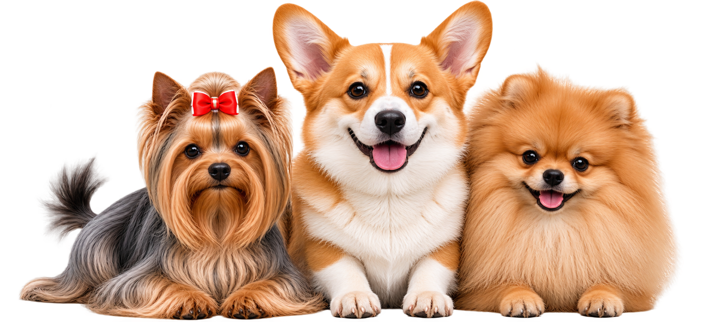
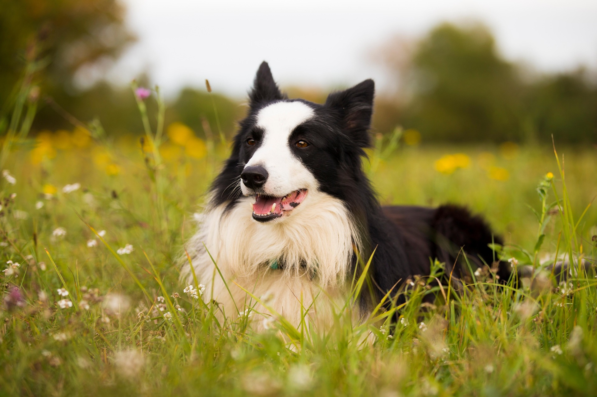
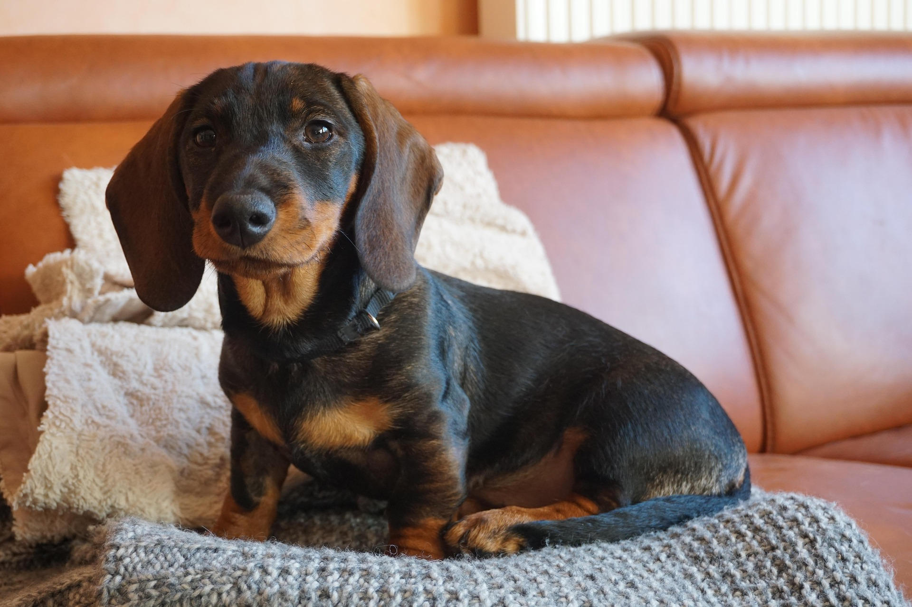
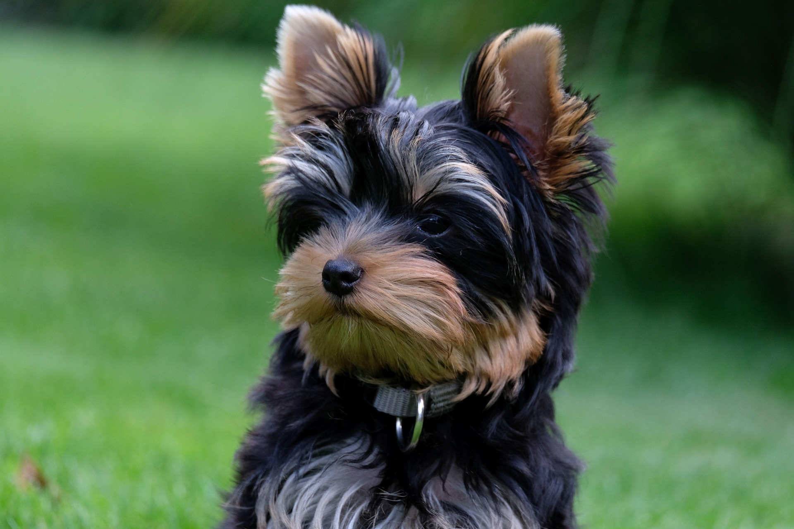
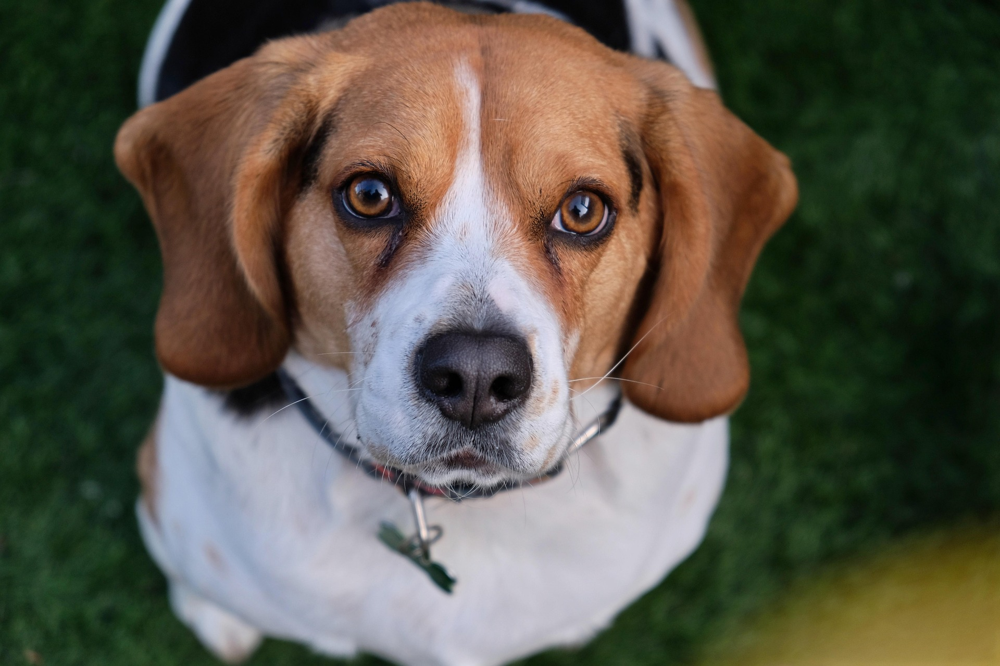
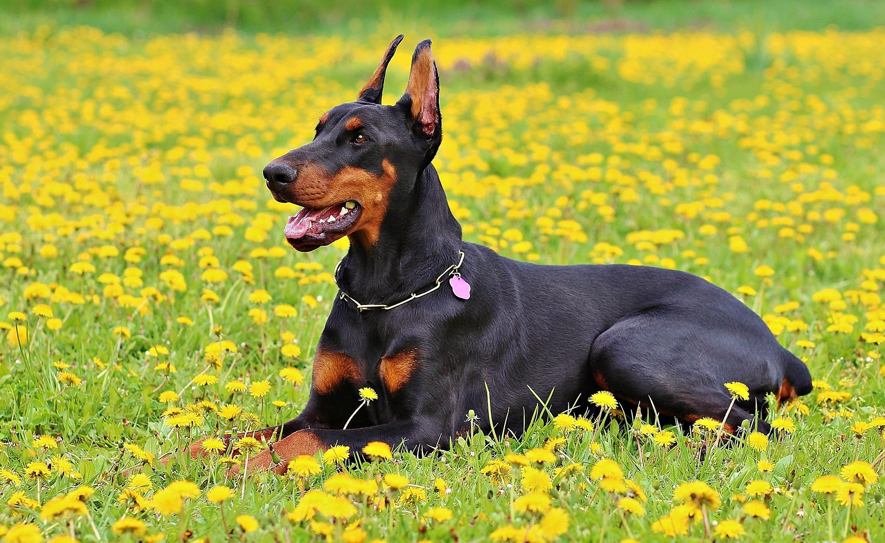
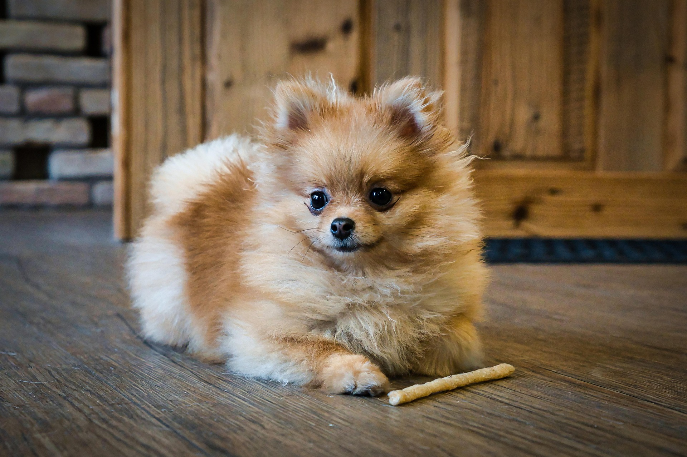

Berger allemand
Grand
Noir et feu
🐾 Voir la fiche complète >
Cliquez sur une race pour en savoir plus sur son caractère, ses besoins et ses particularités

Grand
Noir et feu
🐾 Voir la fiche complète >
Moyen
Noir et blanc
🐾 Voir la fiche complète >
Petit
Fauve et blanc
🐾 Voir la fiche complète >
Grand
Cuivré et blanc
🐾 Voir la fiche complète >
Petit
Chocolat et feu
🐾 Voir la fiche complète >
Moyen
Cuivré et blanc
🐾 Voir la fiche complète >
Grand
Doré
🐾 Voir la fiche complète >
Petit
Noir et feu
🐾 Voir la fiche complète >
Moyen
Noir et feu
🐾 Voir la fiche complète >
Grand
Noir et feu
🐾 Voir la fiche complète >
Petit
Noir et feu
🐾 Voir la fiche complète >Grand chien • Actif • Protecteur • Intelligent
Le berger allemand est un chien de berger exceptionnel, réputé pour sa grande intelligence et sa polyvalence unique. Fidèle, protecteur et courageux, il développe un attachement profond et indéfectible envers sa famille. Son endurance physique et ses facultés d'apprentissage en font le partenaire idéal des forces de l'ordre.
56 - 66 cm
23 - 41 kg
12 - 14 ans
Élevé
Très attaché à sa famille. Son énergie, sa taille et ses instincts de travail nécessitent un foyer impliqué dans ses activités et son éducation.
Socialisation et éducation précoces particulièrement importantes. Très apte à l'obéissance et aux tâches structurées; l'apprentissage doit se poursuivre à l'âge adulte.
Chien athlétique ayant besoin de beaucoup d'exercice et de stimulation mentale. Promenades, jeux, pistage et activités canines lui conviennent bien.
Double pelage avec perte de poils notable; brossage fréquent, davantage pendant les périodes de mue.
Moyen chien • Très actif • Intelligent • Obéissant
Le border collie est un chien de berger extrêmement intelligent et énergique. Il excelle dans les activités nécessitant de l'agilité et de la rapidité. Sa nature travailleuse et son désir de plaire en font un compagnon idéal pour les familles actives.
46 - 56 cm
14 - 20 kg
12 - 15 ans
Très élevé
Peut être excellent en famille, mais son instinct de rassemblement peut le pousser à vouloir « conduire » les enfants. Idéal pour un foyer très actif.
Exceptionnellement réceptif à l'apprentissage. Il a besoin de défis réguliers et d'un propriétaire impliqué; l'ennui peut devenir problématique.
Très grands besoins physiques et mentaux. Longues activités, entraînement, jeux de réflexion, agility ou activités similaires.
Double pelage à brosser régulièrement, généralement une à deux fois par semaine, davantage durant les mues.
Petit chien • Actif • Affectueux • Intelligent
Le Corgi est un petit chien au caractère vif et affectueux. Il est connu pour sa loyauté envers sa famille et son tempérament joyeux. Malgré sa petite taille, il est courageux et aime participer à diverses activités.
25 - 30 cm
10 - 14 kg
12 - 15 ans
Modéré
Affectueux et très proche de sa famille. Peut bien vivre avec des enfants lorsqu'il est correctement socialisé.
Intelligent et généralement réceptif, mais peut avoir un côté indépendant. Éducation douce, cohérente et positive.
Chien énergique qui apprécie promenades, jeux et activités mentales. Son passé de chien de troupeau se ressent encore.
Double pelage avec perte de poils importante; brossage fréquent, particulièrement durant les périodes de mue.
Grand chien • Très actif • Amical • Intelligent
Le Husky sibérien est un chien de traîneau robuste et énergique. Il est connu pour sa nature amicale et son tempérament sociable. Avec son pelage épais et ses yeux perçants, il est à la fois beau et résistant aux conditions climatiques rigoureuses.
50 - 60 cm
20 - 27 kg
12 - 14 ans
Très élevé
Très social, généralement amical avec les humains et les autres chiens. Il apprécie énormément la compagnie et supporte mal d'être seul longtemps.
Intelligent mais indépendant. Éducation patiente, cohérente et positive; son instinct de prédation et son goût de l'exploration nécessitent une bonne gestion.
Très énergique. Demande beaucoup d'exercice, de stimulation et un environnement sécurisé; il peut creuser ou chercher à s'échapper.
Double pelage dense avec mues importantes; brossage particulièrement nécessaire lors de la perte du sous-poil.
Petit chien • Actif • Affectueux • Intelligent
Le Dachshund, également connu sous le nom de Teckel, est un petit chien au corps allongé et aux pattes courtes. Il est courageux, curieux et très attaché à sa famille. Malgré sa taille, il possède une grande personnalité et aime participer à diverses activités.
20 - 27 cm
7 - 14 kg
12 - 16 ans
Modéré
Sociable et très attaché à ses humains. Mieux adapté aux enfants capables de le manipuler correctement.
Intelligent, déterminé et parfois têtu. Motivation par récompenses, patience et constance. Son instinct de chasse peut facilement le distraire.
Exercice quotidien modéré, notamment deux promenades. L'activité aide à maintenir sa musculature, importante pour soutenir son dos.
Dépend du pelage : le poil ras demande peu d'entretien, tandis que les variétés longues ou dures demandent davantage de brossage.
Petit chien • Actif • Affectueux • Intelligent
Le Shiba Inu est un petit chien japonais au caractère vif et indépendant. Il est connu pour sa loyauté envers sa famille et son tempérament joyeux. Avec son pelage épais et ses yeux perçants, il est à la fois beau et résistant aux conditions climatiques rigoureuses.
33 - 41 cm
8 - 10 kg
12 - 15 ans
Modéré
Loyal envers sa famille, mais plus indépendant que beaucoup d'autres races. Généralement mieux adapté à un foyer attentif et à des enfants plus âgés.
Intelligent mais volontaire et indépendant. Socialisation précoce, patience et constance essentielles.
Besoin important d'activité physique et mentale. Les sorties doivent être sécurisées en raison de son indépendance.
Pelage double relativement facile à entretenir, mais les périodes de mue peuvent être importantes et demander davantage de brossage.
Grand chien • Actif • Affectueux • Intelligent
Le Golden Retriever est un chien de grande taille, connu pour sa nature amicale et son tempérament doux. Il est très sociable, loyal et aime être entouré de sa famille. Sa polyvalence en fait un excellent compagnon pour les activités de plein air et les sports canins.
55 - 61 cm
25 - 34 kg
10 - 12 ans
Élevé
Particulièrement sociable, affectueux et généralement très à l'aise dans la vie familiale et avec les enfants.
Intelligent et désireux de plaire, donc généralement facile à éduquer. Socialisation précoce et apprentissage cohérent permettent de canaliser son enthousiasme.
Chien actif qui demande de l'exercice quotidien. Il apprécie particulièrement les promenades, la course, la randonnée, la nage et les jeux de rapport.
Double pelage avec mue régulière : brossage une à deux fois par semaine, plus souvent durant les fortes mues.
Petit chien • Actif • Affectueux • Intelligent
Le Yorkshire Terrier est un petit chien au caractère vif et affectueux. Il est connu pour sa loyauté envers sa famille et son tempérament joyeux. Malgré sa petite taille, il possède une grande personnalité et aime participer à diverses activités.
15 - 17 cm
2 - 3 kg
12 - 15 ans
Modéré
Très attaché à ses humains et adaptable; sa petite taille demande toutefois de la délicatesse, surtout avec de jeunes enfants.
Intelligent mais parfois indépendant. Séances courtes, patientes et basées sur le renforcement positif.
Petites promenades quotidiennes, jeux et stimulation mentale malgré son petit format.
Si le poil est gardé long, brossage quotidien; bains réguliers et attention aux dents, oreilles et griffes.
Chien de taille moyenne • Actif • Affectueux • Intelligent
Le Beagle est un chien de taille moyenne, connu pour sa nature amicale et son tempérament doux. Il est très sociable, loyal et aime être entouré de sa famille. Sa polyvalence en fait un excellent compagnon pour les activités de plein air et les sports canins.
33 - 41 cm
9 - 11 kg
12 - 15 ans
Élevé
Très sociable, affectueux et généralement bon avec les enfants. Supporte mal les longues périodes de solitude.
Son odorat peut prendre le dessus sur son attention. Travail en laisse, patience et récompenses alimentaires sont particulièrement utiles.
Au moins environ une heure d'exercice quotidien; promenades, exploration et jeux olfactifs lui conviennent particulièrement bien.
Pelage court et dense : brossage hebdomadaire généralement suffisant; bains peu fréquents.
Grand chien • Actif • Affectueux • Intelligent
Le Doberman est un chien de grande taille, connu pour sa nature protectrice et son tempérament loyal. Il est très intelligent, énergique et aime être actif. Avec son allure élégante et sa musculature puissante, il est à la fois impressionnant et affectueux envers sa famille.
63 - 72 cm
30 - 40 kg
10 - 13 ans
Élevé
Très loyal et fortement attaché à sa famille. Peut être un excellent chien familial avec une socialisation appropriée, tout en restant naturellement vigilant.
Très intelligent et apprend rapidement. En raison de sa puissance et de son tempérament protecteur, socialisation et éducation cohérentes dès le jeune âge sont particulièrement importantes.
Besoin quotidien d'activité physique et mentale. Promenades soutenues, jeux, randonnée, obéissance ou agility sont de bonnes options.
Faible entretien du pelage. Son poil court demande principalement un brossage rapide régulier ainsi que les soins habituels des griffes, dents et oreilles.
Petit chien • Actif • Affectueux • Intelligent
Le Spitz Nain, également connu sous le nom de Pomeranian, est un petit chien au pelage abondant et à la personnalité vive. Il est très attaché à sa famille et aime être le centre d'attention. Malgré sa petite taille, il possède une grande énergie et apprécie les activités ludiques.
18 - 30 cm
1.5 - 3 kg
12 - 16 ans
Modéré
Compagnon très proche de ses propriétaires. Sa très petite taille nécessite davantage de précautions lors des interactions.
Très intelligent, mais une approche patiente et constante est nécessaire. Socialisation précoce recommandée.
Jeux, petites promenades et stimulation mentale. Malgré sa taille, c'est un petit chien actif.
Son épais double pelage demande un brossage fréquent; un toilettage complet périodique peut également être utile.